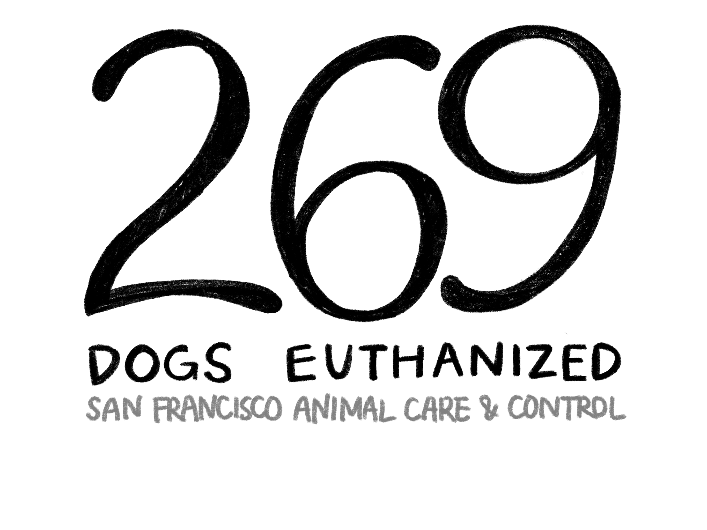
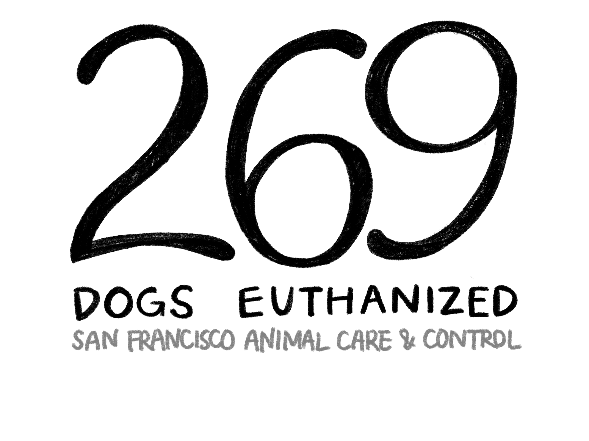

Estella, a short-legged Schnauzer-mix with wiry gray fur, was six years old when Kate Goldberg took her in to live a peaceful life in San Francisco, occasionally snacking on too many bacon bits.
Goldberg, now retired, calls Mission Dolores Park her “backyard” and finds community with fellow dog owners everywhere she goes.
“There’s a whole subculture, and on our block, we call it ‘dog alley,’” Goldberg said.
San Francisco, known for its thriving tech start-up scene, is also recognized by how it welcomes its four-legged friends. The city ranks as one of the top 10 most dog-friendly cities in the U.S., according to a 2022 study by SmartAsset.
A quick walk to Mission Dolores Park or Alamo Square Park will make that clear enough, with owners walking dogs who may be dressed in fluffy turtleneck sweaters or wind-proof parkas.
“Love them a lot [and] feed them a little too much,” Goldberg said. “It’s almost impossible not to spoil them.”


But many dogs in the city don’t get to enjoy the same luxuries. Live release rates, or the rate at which animals are released from shelters, have been on a steady decline since 2020, according to statistics released by San Francisco Animal Care & Control (SF ACC).
In 2023, SF ACC recorded the euthanization of 269 dogs — almost 100 more dogs that failed to find homes compared to the previous year.
One reason for this is that many pet owners simply cannot afford to keep taking care of their pets. 21% of dog owners and 25% of cat owners relinquished their pets for reasons of expense, according to a 2022 study by the American Society for the Prevention of Cruelty to Animals.
San Francisco’s cost of living is high, and the same holds true for a pet’s cost of living. San Francisco dog owners spend an average of $881 annually on veterinary costs, significantly higher than the national average of $200 to $500 per year, according to USA TODAY.
“Veterinary fees are outrageous,” Goldberg said. “It's more expensive on a minute-by-minute basis to go to a lot of vets than pediatricians. It's just crazy.”
Dog owner Sarai Sanchez estimates the total cost of caring for her dog, Miss Pink Luna, to be $2,000 to 3,000 a month. She spends much more than an average dog owner is able to afford spoiling her dog because she does not have to worry about housing while living with her parents, Sanchez said.
 

But high costs aren’t the only problem. A majority of recent dog euthanizations resulted from a lack of spaying and neutering during the COVID-19 pandemic, Deb Campbell of SF ACC said.
When resources were redirected to human causes and COVID-19, it was more difficult to find veterinary care, Campbell said.
U.S. veterinarians performed 13% fewer spay-and-neuter surgeries in 2020 compared with 2019, according to a study in Frontiers in Veterinary Science.
“There are a lot of dogs and cats out there that didn't get spayed or neutered that probably are still reproducing,” Campbell said. “It's frustrating for all the shelters in this country. I can't think of any shelter that's not affected by this.”
Currently, SF ACC sees ten or more dogs being brought to their facilities each day. The most effective way to reduce the number of unwanted dogs in shelters is through spaying and neutering, Campbell said.
“It takes a village, and it takes a lot of money to try to solve problems like this, and I don't think it's going to be solved soon,” she said. “But if at least people are aware of it, baby steps, but it helps — every little bit helps.”
Meanwhile, many unhoused dogs continue to enter the system.
In response to this nationwide problem, San Francisco looks to some unique organizations that help dogs that otherwise would be euthanized find homes. One such organization is Muttville, a shelter that focuses on finding elderly dogs a loving home. In 2023, this dog sanctuary located in the Mission District rescued more than 1,200 dogs, public relations specialist Patty Stanton said.
Muttville was founded by former hairstylist Sherri Franklin in 2007 and takes in dogs from all over Northern California on an application basis.
“Two from here and one from Santa Cruz, a big one and a little one, a seven-year-old to a fifteen-year-old. We’re trying to have a different mix,” Stanton said. “But we have capacity, which is about 90 at a time.”
Due to this limit, Muttville is unable to take in all the dogs that have applications. For dogs to be accepted to the shelter, they must be more than seven years old and good with both dogs and people, Stanton said.
Stanton said she does not consider Muttville to be a “no kill” organization.
Originally, an animal shelter was considered “no kill” if they committed to saving all healthy and treatable pets from unnecessary euthanasia, according to Animal Humane Society. However, today, the animal welfare community is more divided on this label.
For one, there is no organization that universally determines a shelter’s “no-kill” status, according to The Humane Society. A commonly used statistic of at least 90% of animals saved is used commonly.
However, many “no kill” shelters have adopted a limited admission policy, in which they may not accept animals that don’t appear as they can be saved.
“Because they select the animals that are coming to their door, they can say ‘no, I don't want that dog that's showing signs of reactivity or food guarding,’” Campbell said. Because of this, SFACC is left to take care of the remaining animals.
Stanton said the main mission of Muttville is to make senior dogs attractive for people to adopt.
“Even though they don't last as long, saving a life is just worth it, and if we don't do it, who will?” she said. “But we do find that there's lots of people in the Bay Area that have a heart to take a dog that maybe has a short time.”
And that rings true for the majority of people we talked to.
“The majority of people here adopt dogs, like a lot of my friends and neighbors I know,” said Tony Le, a local personal trainer. “I have adopted two dogs.”